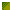
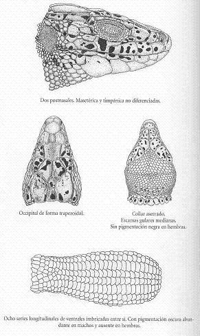

|
| Lagarto
verdinegro |
Lacerta
schreiberi |
| Orden:
Squamata, familia: lacertidae |

Identificación |
Lagarto
de tamaño medio. Macho con garganta azul.
Hembra con gruesas manchas negras en el dorso.
Juveniles con abundantes ocelos blancos o amarillentos
en los costados. |
 |
| Adulto |
Lagarto
de tamaño medio que alcanza hasta 13,5
cm. de longitud cabeza-cuerpo. Colan intacta que
mide desde 1,5 hasta casi 2 veces la longitud
cabeza-cuerpo. cabeza y cuerpo robusos. Las escamas
de la garganta poseen bordes redondeados. collar
de borde aserrado. escapa occipital a menudo grade
y de contorno trapezoidal. Escamas dorsales redondeadas
a ovaladas y dispuestas en número de 45
a 58 en una línea transversal en el centro
del cuerpo. Escamas ventrales repartidas por lo
general en ocho filas longitudinales (ocasionalmente,
en diez, y más raramente, en sólo
seis). Zona superior de la cabeza, patas y cola
de tonos pardos. el dorso es muy variable, desde
un reticulado fino de pequeños puntos verdes
y negros uniformemente distribuidos, hasta un
fondo verdoso o pardo sobre el que se extienden
grandes manchas negruzcas |
| Dimorfismo
sexual |
Los
machos, de tamaño corporal menor que las
hembras y cabeza más robusta, poseen dorso
de color verde o amarillento finamente reticulado
o punteado de negro y vientre amarillo, con pequeñas
manchas negras sobre la prácitca totalidad
de las escamas ventrales. La garganta es de color
blanco sucio o cremas, salvo en el periodo de
celo, cuando adquiere un tono azul intenso que
se extiende con frecuencia a toda la cabeza. |
Las
hembras poseen una cola relativamente más
larga que los machos; el dorso presenta tonos
de fondo pardos o verdosos sobre los cuales aparecen
manchas negruzcas generlamene dispuestas en dos
anchas bandas dorsolaterales, pero tambien más
irregularmente distribuidas en otros individuos.
En algunas hembras se ha observado también
la casi total desaparición de dichas manchas,
así como una coloracion azul a los lados
de la cabeza y en la garganta similar a la característica
de los machos en celo |
| Descripción
del juvenil |
Los
recien nacidos miden normalmente entre 27 y 36
mm. de longitud cabeza-cuerpo y entre 30 y 56
mm. de longitul de cola, con un peso medio que
suele oscilar entre 0,7 y 1g. Cabeza muy robusta.
Dorso y costados de colo pardo negruzco. Los costados
poseen numerosas manchas amarillentas o blancuzcas,
ribeteadas de una fina línea negra y de
forma irregular. Cola amarillenta. |
|
|
Distribución |
|
|
Endemismo
de la península Ibérica. Presente
en todo el cuadrante noroccidental, que abarca
toda Galicia, el tercio norte de Portugal, la
cordillera Cantábrica y el País
Vasco. En la zona cantábrica penetra por
el sur hasta el norte de Zamora, palenci y león.
Despúes desaparce de toda la submeseta
norte de condiciones climáticas contintentales
para penetrar nuevamente hacia el interior a través
del sistema Central. desde la sierra de la Estrella,
en portugal, hasta su extremo más oriental,
la sierra de Ayllón. Por la costa atlántica
portuguesa progresa hacia el sur hasta la latitud
de Lisboa. Más allá encontramos
poblaciones aisladas en zonas de condiciones ambientales
apropiadas (pluviosidad más elevada). En
el caso de las sierras de Montejunto, Sintra,
Monchique, Sao Mamede, en portugal, y de Villuercas,
Guadalupe, Montes de Toledo, Valencia de Alcantara
y este de Sierra Morena en España. Toda
el área de distribución del lagarto
verdinegro se caracteriza por poseer precipitaciones
de al menos 800 mm. anuales y temperaturas medias
anuales superiores a los 4º C. |
| Variaciones
geográficas |
Entre
los individuos del noroeste de la Península
y los del Sistema Central existen
algunas diferencias menores en el número
de escamas en la garganta, la forma y tamaño
de algunas escamas de la cabeza, y la coloración,
pero ello ho ha dado lugar a la descripción
de razas geográficas, de modo que se considera
a la especie como monotípica. |
|
|
Habitat |
Se
halla preferentemente en hábitats húmdos,
en muchos casos cercanos a cursos de agua, en zonas
de pastizal, lindes de bosque y áreas arbustivas
en el dominio de bosques de robles o de bosques de hoja
caduca, así como en las formaciones vegetales
resultantes de su degradación. Presente desde
el nivel del mar hasta los 2.100 m. de altitud en la
sierra de Gredos. |
|
Biología |
En
casi todas las poblaciones, los machos comienzan sus
actividad anual antes que las hembras, hacia el mes
de febrero o marzo; las hembras, por su parte, lo hacen
incluso un mes después. El período de
reposo invernal comienza hacia octubre. La temperatura
corporal de individuos activos es de unos 31 o 32º
C. |
Durante
el celo, los machos adquieren una coloración
intensa muy característica en la garganta y lados
de la cabeza. Se pueden observar cópulas desde
abril hasta julio. Se conocen casos de apareamientos
de un macho con varias hembras y también la situación
contraria. Las puestas suelen incluir de 11 a 18 huevos
de 11,5-17,5 mm. de longitud por 8,2-11,7 mm. de anchura
y se realizan desde finales de mayo hasta principios
de julio. Las puestas suelen realizarse en suelos bien
soleados y desprovistos de vegetación. También
se ha observado el empleo de galerias abandonadas de
topos para depositarlas. La eclosión se verifica
tras un período de incubación de dos a
tre meses. Sólo a partir del tercer año
de vida alcanzan los machos la madurez sexual, que es
aún más tardía, hasta el cuarto
e incluso el quinto año, en las hembras. |
Se
han detectado densidades de población muy variables,
entre los 25 y los 225 individuos por hectárea.
En general, en las poblaciones naturales se observa
un número algo superior de hembras que de machos
adultos. |
Se
alimentan básicamente de insectos, sobre todo
de moscas y mosquitos. En primavera destaca el consumo
de escarabajos, mientras que en verano y otoño
toman el relevo los saltamontes. Pueden también,
de modo esporádico, consumir pequeños
reptiles, como lagartijas serranas. |
Entre
los reptiles, se ha citado a la culebra lisa europea
como depredadora del lagarto verdinegro. Entre las aves,
se sabe de su captura por parte de cernicalos vulgares,
ratoneros, halcones abejeros, aguiluchos cenizos y cigüeñas,
y ente los mamíferos, las martas, ginetas y nutrias
captura tambien, aunque de modo más esporádico,
al lagarto verdinegro. |
Estado de la población y amenazas |
La
destrucción de sus hábitats, sobre todo
de los sotos fluviales y de la vegetación en
los márgenes de ríos y arroyos, es la
principal amenaza para esta especie. Particularmente
delicada parece la situación de las poblaciones
más meridionales, aisladas unas de otras
en enclaves de reducida superficie que pueden desaparecer
ante alteraciones humanas. |
|
Enlaces |
|
|
|